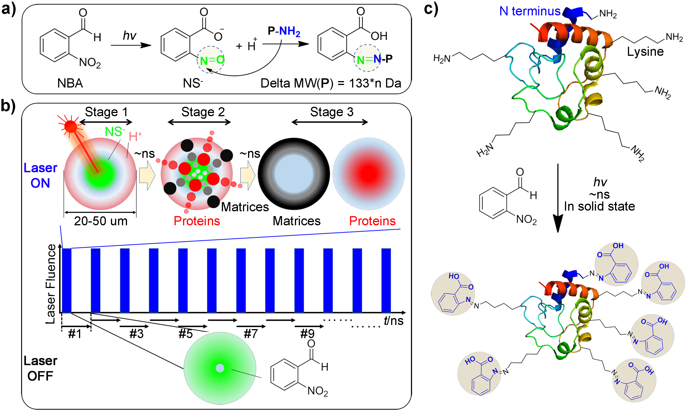
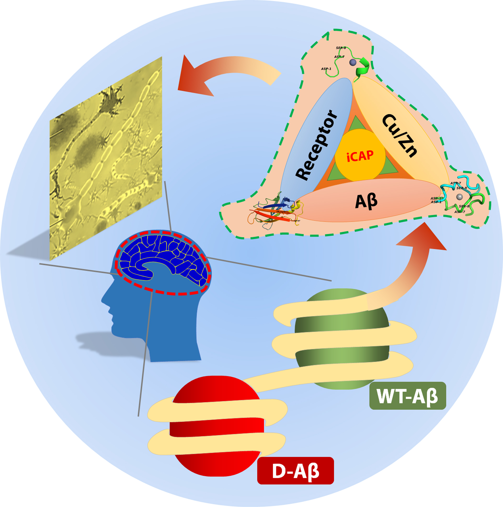

Welcome to PUB Page @ LimsLab!
At Nankai University:
2021
27. Gongyu Li*, Ashley Phetsanthad, Min Ma, Qinying Yu, Ashita Nair, Zhen Zheng, Kellen DeLaney, Fengfei Ma, Seungpyo Hong, Lingjun Li*. Sialylation Fine-Tunes Glycoprotein Structural Microheterogeneity Associated with Alzheimer’s Disease as Captured by Native Ion Mobility-Mass Spectrometry. ChemRxiv Preprint. https://doi.org/10.26434/chemrxiv.13379957.v1 (*, co-corresponding) [Lossless SMS: AIU/AIF IM-MS.]
26. Gongyu Li, Junfeng Huang, Zhen Zheng, Qinjingwen Cao, Yuwei Tian, Guangming Huang, Lingjun Li and Brandon Ruotolo*. Bicarbonate Buffers Can Promote Crosslinking and Alternative Gas-phase Dissociation Pathways for Multiprotein Complexes. Int. J. Mass Spectrom. 2021, accepted.
Prior to Nankai University:
25. Yang Liu, Gongyu Li and Lingjun Li*. Targeted Top-Down Mass Spectrometry for the Characterization and Tissue-Specific Functional Discovery of Crustacean Hyperglycemic Hormones (CHH) and CHH Precursor-Related Peptides in Response to Low pH Stress. J. Am. Soc. Mass Spectrom. 2021, 32, 6, 1352-1360.
24. Hua Zhang, Xudong Shi, Nhu Q. Vu, Gongyu Li, Zihui Li, Yatao Shi, Miyang Li, Bin Wang, Nathan V. Welham, Manish S. Patankar, and Lingjun Li*. On-tissue derivatization for matrix-assisted laser desorption/ionization mass spectrometry imaging of N-glycans in cancer tissues. Anal. Chem. 2020, 92, 19, 13361–13368.
23. Gaoyuan Lu, Xiaowei Xu, Gongyu Li, Nian Wang, Yinxue Zhu, Ning Wan, Yatao Shi, Lingjun Li, Haiping Hao*, and Hui Ye*. Sub-residue Resolution Footprinting of Ligand-Protein Interactions by Carbene Chemistry and Ion Mobility-Mass Spectrometry. Anal. Chem. 2020, 92, 947-956.
22. Gongyu Li, Daniel Delafield, and Lingjun Li*.
Improved
Structural Elucidation of Peptide Isomers and Their Receptors Using Advanced Ion Mobility-Mass Spectrometry.
Trends Anal. Chem. 2020, 124, 115546.
[Invited Review.]
21. Gongyu Li, Fengfei Ma, Qinjingwen Cao, Zhen Zheng, Kellen DeLaney, Rui Liu and Lingjun Li*.
Nanosecond
Photochemically Promoted Click Chemistry for Enhanced Neuropeptide Visualization and Rapid Protein Labeling.
Nat. Commun. 2019, 10, 4697.
[F1000Prime Recommendation: being of SPECIAL SIGNIFICANCE in its field.]
[FEATURED in Nature Communications Editors’ HIGHLIGHTS.]
[Behind the Paper: Mass Spectrometry Fuels Nanosecond Photochemistry]
[Rapid SMS: nsPCR.]

20. Gongyu Li, Kellen DeLaney, and Lingjun Li*.
Molecular Basis
for Chirality-regulated Aβ Self-Assembly and Receptor Recognition.
Nat. Commun. 2019, 10, 5038.
[High-resolution SMS.]

19. Qinjingwen Cao, Yijia Wang, Bingming Chen, Fengfei Ma, Ling Hao, Gongyu Li, Chuanzi Ouyang, and Lingjun Li*. Visualization and Identification of Neurotransmitters in Crustacean Brain via Multifaceted Mass Spectrometric Approaches. ACS Chem. Neurosci. 2019, 10, 1222-1229.
18. Gongyu Li, Qinjingwen Cao, Yang Liu, Kellen DeLaney, Zichuan Tian, Eugene Moskovets and Lingjun Li*. Characterizing and Alleviating Ion Suppression Effects in Atmospheric Pressure Matrix-Assisted Laser Desorption/Ionization (AP-MALDI). Rapid Commun. Mass Spectrom. 2019, 33, 327-335.
17. Yuting Chen‡, Gongyu Li‡, Siming Yuan, Yang Pan, Yangzhong Liu and Guangming Huang*. Ultrafast Micro-Electrophoresis: Behind Direct Mass Spectrometry Measurement for Proteins and Metabolites in Living Cell/Cells. Anal. Chem. 2019, 91, 10441-10447. (‡, co-first author)
16. Shihui Zheng, Siming Yuan, Zhuanghao Hou, Gongyu Li, Yuting Chen, Yang Pan, Yangzhong Liu and Guangming Huang*. Charge-dependent modulation of specific and nonspecific protein-metal ion interactions in nanoelectrospray ionization mass spectrometry. Rapid Commun. Mass Spectrom. 2019, 33, 1502.
15. Tiantian Fang, Wanbiao Chen, Yaping Sheng, Siming Yuan, Qiaowei Tang, Gongyu Li, Guangming Huang, Jihu Su, Xuan Zhang,* Jianye Zang,* and Yangzhong Liu*. Tetrathiomolybdate Induces Dimerization of the Metal-binding Domain of ATPase and Inhibits Platination of the Protein. Nat. Commun. 2019, 10, 186.
14. Gongyu Li‡, Shihui Zheng‡, Yuting Chen, Zhuanghao Hou and Guangming Huang*.
Reliable Tracking In-solution
Protein Unfolding via Ultrafast Thermal Unfolding/Ion Mobility-Mass Spectrometry.
Anal. Chem. 2018, 90, 7997-8001. (‡, co-first author)
[Rapid SMS: Online IM-MS of ms Solution Unfolding .]
13. Gongyu Li‡, Siming Yuan‡, Shihui Zheng, Yangzhong Liu* and Guangming Huang*.
In-situ Living Cell
Protein Analysis by Single-step Mass Spectrometry.
Anal. Chem. 2018, 90, 3409-3415. (‡, co-first author)
[Ultrafast MS: Workflow.]
12. Gongyu Li‡, Siming Yuan‡, Shihui Zheng, Yuting Chen, Zhen Zheng, Yangzhong Liu* and Guangming Huang*. The effect of salts in promoting specific and competitive interactions between zinc finger proteins and metals. J. Am. Soc. Mass Spectrom. 2017, 28, 2658-2664. (‡, co-first author)
11. Zhen Zheng‡, Peiyao Chen‡, Gongyu Li‡, Yunxia Zhu‡, Zhonghua Shi, Yufeng Luo, Chun Zhao, Ziyi Fu, Xianwei Cui, Chenbo Ji, Fuqiang Wang,* Guangming Huang* and Gaolin Liang*. Mechanistic study of CBT-Cys click reaction and its application for identifying bioactive N-terminal cysteine peptides in amniotic fluid. Chem. Sci. 2017, 8, 214-222. (‡, co-first author)
10. Zhen Zheng, Gongyu Li, Chengfan Wu, Miaomiao Zhang, Yue Zhao, and Gaolin Liang*. Intracellular synthesis of D-aminoluciferin for bioluminescence generation. Chem. Commun. 2017, 53, 3567-3570.
9. Gongyu Li, Siming Yuan, Yang Pan, Yangzhong Liu and Guangming Huang*.
Binding states of protein-metal complexes in cells.
Anal. Chem. 2016, 88, 10860-10866.
[Ultrafast MS: Mechanism + Application.]
8. Yue Yin, Gongyu Li, Yafeng Guan and Guangming Huang*. Sheathless interface to match flow rate of capillary electrophoresis with electrospray mass spectrometry using regular-sized capillary. Rapid Commun. Mass Spectrom. 2016, 30 Suppl 1, 68-72.
7. Zhen Zheng, Hongbin Sun, Chen Hu, Gongyu Li, Xiaomei Liu, Peiyao Chen, Yusi Cui, Jing Liu, Junfeng Wang, and Gaolin Liang*. Using "On/Off" FNMR/MRI signals to sense tyrosine kinase/phosphatase activity in vitro and in cell lysates. Anal. Chem. 2016, 88, 3363-3368.
6. Zhen Zheng, Lin Wang, Wei Tang, Peiyao Chen, Hui Zhu, Yue Yuan, Gongyu Li, Huafeng Zhang, Gaolin Liang*. Hydrazide D-luciferin for in vitro selective detection and intratumoral imaging of Cu2+. Biosens. Bioelectron. 2016, 83, 200-204.
5. Gongyu Li, Jiying Pei, Yue Yin and Guangming Huang*. Direct sequencing of a disulfide-linked peptide with electrospray ionization tandem mass spectrometry. Analyst 2015, 140, 2623-2627.
4. Gongyu Li and Guangming Huang*. Alleviation of ion suppression effect in sonic spray ionization with induced alternating current voltage. J. Mass Spectrom. 2014, 49, 639-645.
3. Gongyu Li, Yue Yin, Guangming Huang*. Increased disulfide peptide sequence coverage via “cleavage ON/OFF” switch during nanoelectrospray. RSC Adv. 2014, 4, 59650-59654.
2. Hongying Zhu, Gongyu Li, Guangming Huang*. Screening of complicated matrixes with paper assisted ultrasonic spray ionization mass spectrometry. J. Am. Soc. Mass Spectrom. 2014, 25, 935-942.
1. Fugang Xu*, Miao Deng, Gongyu Li, Shouhui Chen, Li Wang*. Electrochemical behavior of cuprous oxide-reduced graphene oxide nanocomposites and their application in nonenzymatic hydrogen peroxide sensing.Electrochim. Acta 2013, 88, 59-65.